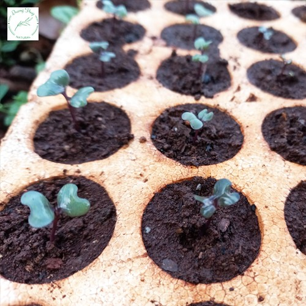
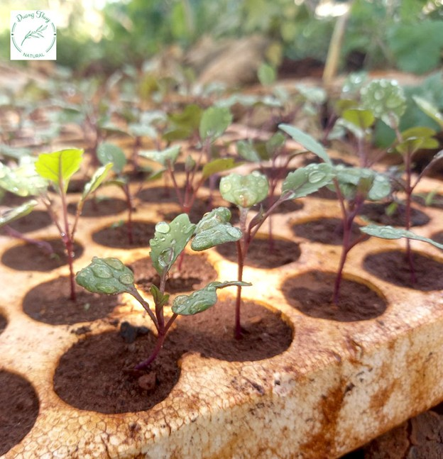
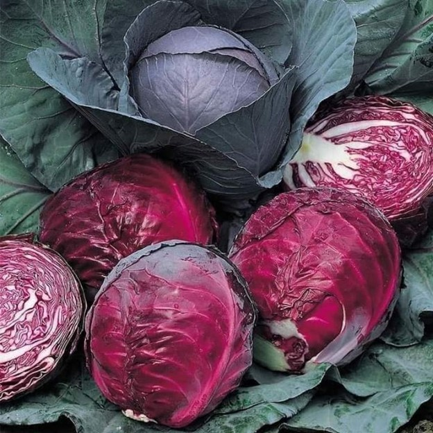

Hạt giống Bắp Cải Tím là loại hạt giống chuẩn, đảm bảo tỷ lệ nảy mầm cao, cho năng suất lớn và kháng sâu bệnh hiệu quả. Nếu bạn đang tìm mua hạt giống Bắp Cải Tím, hãy đặt mua ngay tại đây. Chúng tôi còn cung cấp hướng dẫn chi tiết về cách trồng từ hạt giống.
Cách trồng Hạt giống Bắp Cải Tím
Cách ươm hạt Bắp Cải Tím
- Ngâm hạt giống bắp cải trong nước ấm (2 sôi : 3 lạnh khoảng 45 độ) rồi vớt ra ủ trong khăn ẩm khoảng 8 tiếng.
- Sử dụng giá thể trồng đã chuẩn bị, cho vào khay ươm giống. Mỗi lỗ gieo 2 hạt, phủ nhẹ một lớp giá thể mụn dừa sạch lên trên rồi tưới giữ ẩm. Bạn có thể sử dụng viên nén, mỗi viên 2 hạt.

Cách ươm, ủ hạt giống bắp cải tím
- Sau khoảng 2 – 3 tuần, cây lên được 2 lá thật thì chọn cây khỏe mạnh, cao, giữ lại chăm, còn cây yếu hơn thì tỉa bỏ.
- Đến khi cây có 5 – 6 lá thật, cao 7 – 10cm thì chuyển cây trồng vào chậu lớn.
Đất trồng chọn lựa ra sao
Đất phải đủ dinh dưỡng, có độ pH phù hợp và độ thoát nước tốt. Tỷ lệ trộn thông thường: đất thịt 50%, phân hữu cơ 20% (trùn quế, phân bò, phân dê, gà đã ủ hoai…), mụn dừa sạch 10%, trấu hun 10%, trấu sống 10% (hoặc dùng đá perlite). Ngoài ra, bạn có thể sử dụng thêm phân NPK để trộn vào đất hoặc sử dụng đất hữu cơ trộn sẵn.
Sử dụng thêm nấm đối kháng Trichoderma để bổ sung vi sinh vật có lợi cho đất.
Ánh sáng cần lưu ý gì
Cây cần ánh sáng để quang hợp và sinh trưởng. Vì vậy, nơi trồng cần được chọn có ánh sáng đầy đủ, đặc biệt là ánh sáng mặt trời, ít nhất 5 tiếng/ngày.

Chăm sóc cây giống Bắp Cải Tím
- Tưới nước: Tưới nước thường xuyên vào sáng sớm và chiều mát khi trời nắng, khô hanh. Về sau có thể giảm lượng nước còn 1 ngày 1 lần.
- Bón phân: Sau khi trồng cây được 15 ngày, bạn tiến hành bón thúc phân hữu cơ trùn quế, phân gà, phân dê luân phiên cho cây. Lặp lại 15 ngày/lần, thỉnh thoảng bổ sung nước vo gạo hoặc phân hữu cơ tự ủ như GE chuối, đạm cá.
- Phòng trừ sâu bệnh hại: Một số loại sâu phổ biến gồm sâu tơ, sâu xanh bướm trắng, bọ nhảy sọc cong vỏ lạc…
Thời điểm thu hoạch
Thời điểm thu hoạch bắp cải tốt nhất là sau 100 ngày, khi bắp to và chắc. Lúc này, bạn có thể bắt đầu thu hoạch.

Cam kết của Hạt Giống Nông Nghiệp
- Giao đúng hàng, đủ hàng
- Kiểm hàng trước khi nhận
- Đổi trả hàng 14 ngày
- Hàng đóng gói nguyên vẹn, còn hạn sử dụng
Hạt giống Bắp Cải Tím là một sản phẩm được nhiều người ưa chuộng và tin dùng qua nhiều năm. Nhờ vào năng suất cao, thời gian thu hoạch ngắn và chất lượng sản phẩm tốt, đây là lựa chọn đáng để bạn cân nhắc. Hãy liên hệ với chúng tôi để được tư vấn và hỗ trợ chi tiết.